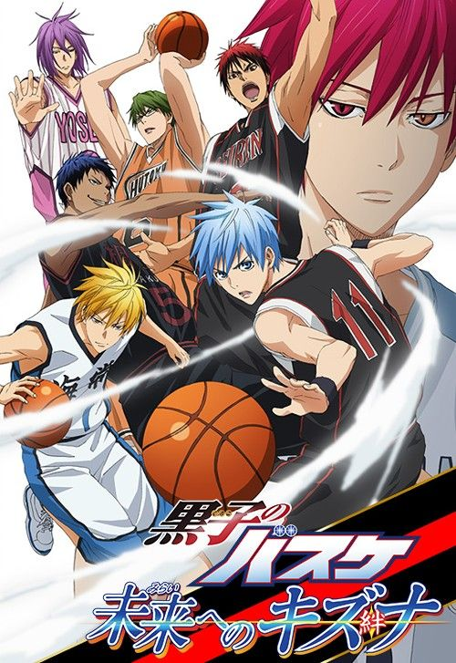

Haikyuu!!
A passionate volleyball player aims to become the next "Small Giant" despite his height.
- MC: Shoyo Hinata
- Sub MC: Tobio Kageyama
- Rivals: Karasuno Rivals
- Author: Haruichi Furudate

Blue Lock
A high-intensity soccer survival program to create the world’s greatest striker.
- MC: Yoichi Isagi
- Sub MC: Rin Itoshi
- Rivals: Blue Lock Competitors
- Author: Muneyuki Kaneshiro

Kuroko no Basket
A shadow player and a prodigy aim to defeat the Generation of Miracles in high school basketball.
- MC: Tetsuya Kuroko
- Sub MC: Taiga Kagami
- Rivals: Generation of Miracles
- Author: Tadatoshi Fujimaki